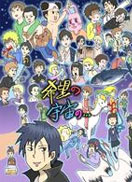
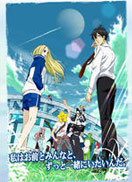
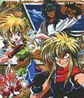
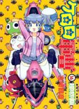
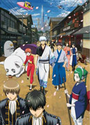

- 恶魔阿萨谢尔在召唤你由久保保久创作的搞笑漫画作品，2007年开始在讲谈社漫画杂志《Evening》连载，到现在为止有6本单行本。故事是以恶魔侦探芥辺和侦探事务所内工作的一群恶魔们为主角，喜欢恶作剧的他们一边办案、一边也闹出了不少令人捧腹的趣事。于2010年OAD动画化并随漫画单行本第四卷和第五卷附赠，TV动画版于2011年4月开始播放。
-  搞笑漫画日和-第1季增田幸助所著的漫画「搞笑漫画日和」，自2000年1月开始在集英社发行的「月刊少年JUMP」上连载以来，因满载无厘头笑点的剧情和对名人名作的滑稽戏仿而大受欢迎。由动画界的名监督大地丙太郎执导的TV动画，在忠实原作的基础上，以更加独特的表现手法将作品的看点呈现在观众眼前。继05年2月的第1季、06年8月的第2季、08年3月的第3季后，本作将在2010年1月推出第4季了
-  荒川爆笑团-第1季这部电波系喜剧讲述了世界顶级企业的社长独生子小招（真名是市之宫行），某日因为溺水而被荒川河畔的流浪美少女Nino救了一命，坚持“有恩必报、不欠人情”的家训的小招决定留在荒川河畔来报答Nino的救命之恩，可Nino提出的要求竟然是“和我谈恋爱吧”……两人就此在荒川河畔展开一段同居生活，上演一出夸张、搞笑、温馨且不可思议的故事
-  极道君漫游记哥古德.尤可特.奇坎斯基是一位到处旅行的冒险家。 有一天一自称算命师的老太婆（魔界王后）告诉哥古德，有人想夺取他的性命，但是哥古德完全不放在心上，而且还偷了老太婆的东西。没想到偷来的这块石头竟然召唤出可以实现三个愿望的精灵。之后，发生了很多事，哥古德也开始了他的冒险旅途…… 旅途中贯穿了各国的各种神话，并且将他们扭曲变形得相当的厉害……比如唐三藏是个极右的激进恐怖分子，魔界和天界的开战简直是翻版的“变形金刚大战”，桃太郎打败的妖怪们其实就是落草为寇的哥古德一伙……可以说，是一个强悍的恶搞动漫！ 值得一提的是：银魂中很多都是借鉴漫游记的。例如：突然变成美少女、龙宫篇、身体倒错大混乱……大概是因为石田彰的关系吧。事隔多年，旧事重现，石头也是感慨颇深。
-  军曹 Gamma星云第58号行星“K隆星”的人，为了侵略蓝星（K隆星人对地球的称呼），派遣了5人先遣部队到蓝星进行调查。其中Keroro军曹行踪败露，被蓝星人日向冬树和日向夏美发现并生擒，侵略用武器“Kero球”落入冬树手中。其后，侵略军的飞船紧急撤退，丢下了在蓝星的先遣部队。于是，Keroro军曹开始了“隶属”于日向家的生活，离散在其他地方的另外4位先遣部队成员也逐一现身…。 军曹的故事内容是，来自外星的青蛙们－keroro小队，想要侵略地球不但一直没有成功，反而变成和地球人一起生活，其中发生了各种趣事。 这部作品以轻松，诙谐的搞笑为主题，以恶搞为最大特点，恶搞对象涵盖了龙珠，EVA，GUNDAM等等数不胜数的经典动漫，许多地方令人捧腹。 如果你是比较早就接触动漫的人，或是动漫的狂热爱好者，你将体会到keroro军曹总能给人会心一笑的感觉。 更多的，当那些往日熟悉的动漫中一幕幕经典场面再次浮现在脑海，总是带给我们怀旧的气息，回忆起从前的快乐……
-  银魂 江户时代末期（本作的20年前），被称为“天人”（あまんと）的谜之异星人来袭。于是地球人与天人之间的战争瞬即爆发，为数众多的武士和攘夷派志士都参与与天人的战斗。幕府见识到天人强大的实力后，最终向天人低头，放弃武士不管，擅自与天人签订不平等条约，准许他们入国。其后更颁布了“废刀令”，夺走了武士的刀，使他们无力反抗。自此，天人横行霸道，幕府为天人所影响，甚至被控制，成为了“傀儡政权”。在这样的时代，有一个落魄，但是却一直贯彻自己武士道的男人与同伴的生活的故事。 也有人称万事屋银魂的诞生源于作者和编辑的一次激烈争执，编辑希望空知英秋搭上时下热门题材“幕末新撰组”的顺风车，但空知英秋却一心想画幻想漫画，在争执不下的情况下，空知英秋终于爆发了，大喊：“那就他妈的让新撰组和外星人对打吧！”——于是《银魂》就诞生了。坂田银时所经营的万事屋。号称做万事其实万事不做的“事务所”。天人掌权后武士没落，身为武士的银时为了维生而建立万事屋，接受他人的请求；只要付钱，什么工作都会做（前提是不违背他的武士道）。
-
热门关键词：热血 机战 恐怖 搞笑 神魔 经济 推理 浪漫